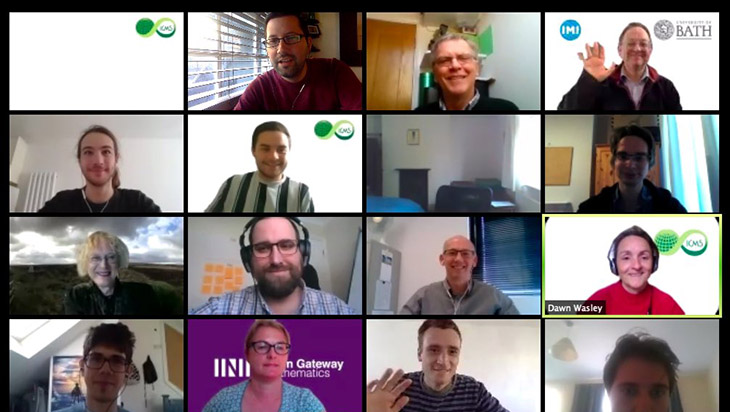
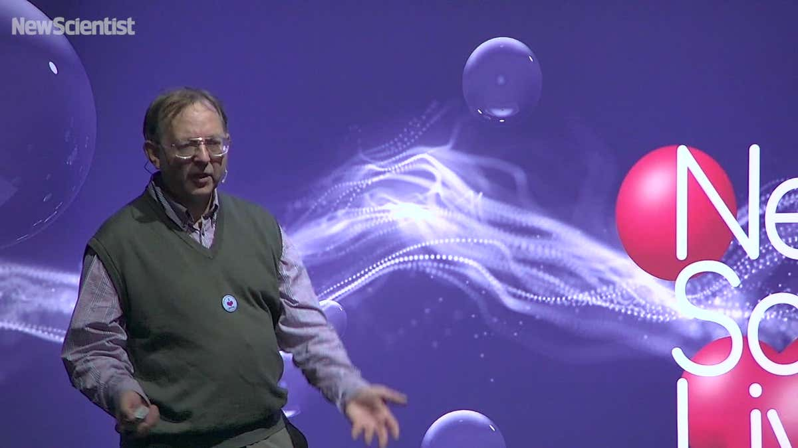

Prof Chris Budd
Professor Chris J Budd OBE, FIMA, C Math, NTF

Chris, Josh and Monty. Josh is in the red coat and
I am the one with the green hat.
General stuff
Positions:
Postal Address:
Dept. of Mathematical Sciences
University of Bath
Claverton Down
Bath
BA2 7AY
United Kingdom
Telephone: +44 (0)1225 386241
Fax: +44 (0)1225 386492
E-mail Address: mascjb@bath.ac.uk
Here is my Curriculum Vitae
Publications and talks
Academic articles
Academic presentations
Articles for the general public about maths
Talks for the general public about maths
Research Interests
I am interested in the theory, application and computation of nonlinear problems (linear problems are for cissies) with special interest in problems
which arise in industry.
I also have a very strong interest in interdisciplinary
projects closely linked to applications ranging from geology
to micro-wave cooking and from digestion to folk dancing.
I am keen to take on PhD students in any of these areas. They can join my
fabulous
group of
PhD students all involved in research in industrial maths
and/or environmental sciences.
Current PhD Projects
- Raising the roof . NERC PhD. Matt Griffith, Nick Mitchell, Met Office
- Non-smooth models for climate Botswana PhD Kgomotso Susan Morupisi
- Indoor LTE and WiFi propagation ICASE PhD. Hayley Wragg, Keith Briggs (BT)
- Inverse problems in EEG Shaerdan Shataer
- Surge in turbochargers Samba/IAAPS PhD. Kate Powers, Chris Brace, Paul Milewski, Colin
- Mitigation zones for seismic surveys and marine animals KTP/PhD Guillermo Jimenez Arranz, Phillipe Blondel, SEICHE
- Adaptive mesh methods for the shallow water equations Simone Appela, Tristan Pryer, Met Office
- Machine learning for CME predications Chinese PhD Scholarship, Tina Zhou, Tom Haines, Met Office
- Impact of climate change on cocoa farming Samba PhD. Tosin Babasola, CRIN
- Inverse problems in ocean acoustics NPL funded PhD, Gianluca Audone, Matt Nunes, Phillipe Blondel, NPL
Current/recent PDRA Research Projects
- MIVOR: Impact of climate change on the National Grid NGC funded. Beate Erhardt, Mixhong ??, Ghenghong Gu, NGC
- Machine learning for hip fracture detection
Arthritis Society, Beate Erhardt, Richie Gill
- Moving meshes on the sphere with applications to weather prediction NERC
- Along with Victor Galaktionov and Johannes Zimmer I was coordinator
of the Bath Node of the FIRST (Fronts and Interfaces in Science
and Technology) Marie Curie training network. See
FIRST Network for more information
about the project, workshops and positions.
Knowledge Exchange:
I belive strongly in the power of knowledge exchange centred around mathematics.
Mathematics is both the enabler of advances in other disciplines and industry,
it has also much to learn from the the challenges that working in these areas
brings. (For an account of my views on this see my
Gresham lectures>
on 'Mathematics and the making of the modern world.
- I am a founder member of the Virtual Forum for Knowledge Exchange in the
Mathematical Sciences V-KEMS
together with the INI, the ICMS, the KTN and a number of other
universities.
See the press release and
presentation
about the work of V-KEMS.
V-KEMS
provides a variety of support mechanisms for on-line knowledge exchange. Much of
this is targeted to address the problems brought by the COVID-19 pandemic. V-KEMS
works closely with the Royal Society RAMP programme, as well as SPI-M, DfE and UUK.
- I am a leading supporter of (Virtual) Study Groups (VSGs) as a hugely effective way of solving problems
using (focused teams of) mathematicians, of motivating mathematicians to work on real life problems, and of learning new mathematics from
applications. Here is an image of a VSG in action

- I am part of the management team for the Bath
MSc in Modern Applications of mathematics.
Nearly all of the students on this course do a 3 month project with industry. I coordinate
these projects which are an excellent way for academics to engage with industry.
- I run the
AIMS series of seminars in applied and interdisciplinary mathematics.
- I contributed to, and strongly support the Bond Review on the
The Era of Mathematics
and serve on a number of working groups which are implementing its recomendations.
- I am on the International Advisory Committee of the EPSRC/LWEC
CliMathNet network ,

which
brings together
mathematicians, climate scientists and policy makers interested in the science and the impact
of climate change.
Education and Public Engagement Interests:

I have a passionate interest in promoting mathematics to the
general public, especially to young people. I love giving
talks about maths to any audience and have appeared at many science festivals including
New Scientist Live (above) and the Heidelberg Luareate Forum.
Please get in touch
if you would like me to give you a talk.
I am happy to give FREE talks to all ages on many subjects related
to the importance and relevance of mathematics to real life.
For examples of talks see
my 24 Gresham lectures on the theme of 'Maths and the making
of the modern world' (which will be coming out as a series of books) and also
fun presentations for the general public .
More details of
my activites in maths education and public engagement are given below
Teaching
My philosophy for teaching is simple. Be aware of (and enjoy) you
audience and be hugely enthusiastic about your subject.
Anyone that says that teaching and research don't go together is
talking rubbish
Current courses
- MA10236 Mathematical methods 1B
- MA30241 Communicating maths
Previous courses
If you are interested in getting involved in public engagement work
and
would like to find out more, then have a look at my talk
Some of my talks/articles/courses on maths education:
Communicating Mathematics
In 2001 I was awarded a National Teaching Fellowship
NTFS
and have used this to create a degree credit programme
on Communicating Maths .
Maths Communicators
is a description of the course and this is a National Coordinating Centre in Public
Engagement
Case Study . Do have a look
and email me if you would like to take this course yourself.
If you are interested in running such a course, then here is a
Handbook
on how to do it
Research talks:
These are some research talks on data assimilation, meteorology, geometric integration and mesh generation
Data Assimilation in Meteorology
Discrete variational derivative methods with applications
to PDEs
Optimal transport methods for mesh generation with applications
to meteorology
Introduction to the geometric integration of ODEs
Adaptivity, scaling and geometric integration methods for PDEs
Some geometric integration methods for PDEs
Parabolic Monge-Ampere methods for mesh generation
Adaptivity and symmetry for ODEs and PDEs
This is a talk on emergent behaviour in large electrical
networks, with application to complex dielectric materials
Emergent scaling laws in complex dielectric materials
These are two talks on maths in the food industry
The mathematics of digestion
Microwave cooking: theory and experiment
These are two talks on non-smooth dynamics
Chattering and grazing in impact oscillators
Bouncing, sliding and switching: bifurcations in piecewise-smooth systems
These are three talks that give a review of piecewise-smooth dynamics
and were a mini course delivered at the UK-Japan Winter School in
January 2009.
Piecewise-smooth dynamics: I. Introduction
Piecewise-smooth dynamics: II. Maps
Piecewise-smooth dynamics: III. Hybrid systems and the grazing
bifurcation.
And a talk on folding and geology
Level set methods for multilayer geological folding
And a talk on GPS, Complexity and the Ionosphere
Imaging of complex behaviour in the upper atmosphere
Bath Centre for Nonlinear Mechanics and the Bath Institute for Complex Systems, BICS:
I am director of the interdisciplinary Bath Centre For Nonlinear Mechanics
which encourages interdisciplinary research through the modelling and application of nonlinear systems.
From 2004-2010 I was director of the Bath Institute for Complex System BICS ,an interdisciplinary institute
exploring the many aspects of complex systems and their applications.
MSC in Modern Applications of mathematics:
I am director of the Bath Msc course in Modern Applications
of Mathematics which aims to give a training
in modern interdisciplinary applied mathematics to anyone interested
in applying mathematics in their career.
For further information email or look at the home page for the MSc
above.
Public talks, lectures and workshops:
Here are a collection of some of my talks, which
can be given either as stand alone lectures or as part of a workshop
with extra activities. I have tried to indicate the age range for the workshops. The workshops have resource materials
and worksheets attached. PLEASE DOWNLOAD AND USE them for any
reasonable educational purpose.
Maths Makes Waves A talk on waves presented at the British Science Festival.
Maths and the making of the modern world A talk about the way that maths has made the modern world possible.
Maths, magic and mystery(KS3 workshop) and
worksheets. A workshop about mathematical magic together with lots of examples of magic tricks and the maths behind them
Inspiring Maths Inspiring maths teaching, a CPD workshop for teachers of secondary school maths.
The maths of Google and the IPod (KS3 workshop) and
worksheets. A talk about the maths involved in CDs, the IPod and Google, including binary, error correction, data compression and the Page Rank Algorithm.
75 Years of Radar a talk for all ages, originally presented to the
British Science Festival to celebrate the 75th anniversary of the invention of Radar(July 2010)
Maths in and out of the zoo a talk for all ages, originally presented to the
Oxford Alumni showing the may ways that maths can be found in the zoo, and what happens when this exotic animal escapes into the real world (July 2010)
The link between Maths, Mazes and Facebook
Confessions of an industrial mathematician ..
how to use maths from industry in the classroom (talk for teachers presented at BCME
(April 2010))
Climate Change: Does it all add up? (Yr 12 Maths Inspiration Presentation)
How to amaze your friends (KS3 workshop) and
worksheets. A talk about the history, maths and modern uses of mazes.
How to lie and get away with it (KS3 workshop) and
worksheets. A talk on the mathematics of the information ages, including the maths of the iPod.
How maths can help in the fight against crime (KS4 workshop) and
worksheets
Maths of castles (KS3 workshop) and
worksheets
Dancing with maths (KS3 workshop) and
worksheets
101 Uses of a Quadratic Equation (KS4 workshop) and
worksheet 1 ,
worksheet 2 ,
Babylonian Numbers
Celtic and African Knots (KS3 workshop) and
worksheets ,
grids for the knots . A multicultural talk which shows how the artistic traditions of the Celts and Sub Saharan Africa are linked through mathematics.
Why does Rudolph have a shiny nose? A A maths lecture for all ages at Christmas
Bath Taps Into Science
Eat, drink and be merry with maths (Yr 12 talk)
e, i, pi and all that (Yr 12 talk)
Making sense of a complex world (KS4 talk)
What's the use of chaos (KS4 talk)
What have mathematicians done for us? a talk for all ages showing the contribution that mathematicians
have made to civilisation.
How maths can save your life (KS3 talk)
How maths can change your life .. careers which use maths
Mathematics Galore:
A new popular book called `50 Visions of Mathematics' will be published by OUP in 2014
Bath Taps Into Science:
Is an annual science road show, which I help to organise
at the University of Bath and
in Green Park Station in Bath as part of National Science and
Engineering
Week.
The 2002 event
won a prize from the Institute of Physics for `outstanding
contributions to the public understanding of physics'.
The 2009 event won the
British Science Association award
for the best science festival during National Science and Engineering Week.
Click here for more details
Bath Taps
Into Science Festival
If you want to have a look at Bath Taps in action here is a video .

Posters and articles:
I helped to design
Maths Connects
poster for the London Underground about mathematical
networks
Here are some of my recent popular articles
Opening ,
Response ,
Final
Three articles for the Economist debate on the importance of science and maths to the economy, C. Budd, (2012)
Maths makes waves
C. Budd, (2013)
How to add up quickly
C. Budd, (2013)
Eat, drink and be merry, making sure it's safe
C. Budd, (2010)
Eat, drink and be merry, helping it all go down well
C. Budd, (2010)
Confessions of an industrial mathematician
C. Budd, (2008)
Crime fighting maths I
C. Budd, (2005)
101 Uses of a quadratic equation I
C. Budd and C. Sangwin, (2004)
101 uses of a quadratic equation II
C. Budd and C. Sangwin, (2004)
Finding order in chaos
C. Budd, (2003)
How Maths Can Make You Rich and Famous I
C. Budd, (2003)
How Maths Can Make You Rich and Famous II
C. Budd, (2003)
Does Nature Really Care About Rational Numbers
A Friday Evening Discourse at the
Royal Institution, C J Budd (2001)
Where in the world am I?
C. Budd (2000)
Analemmatic Sundials: How to build one and why they work
C. Budd and C. Sangwin (2000)
Maths aMazes
C J Budd and C J Sangwin (2000)
Undergraduate Course Material:
Worksheets, handouts and general information on courses can be
found here
MA10208 Methods and Applications a
MA10002 Functions, differentiation and analytic geometry
Math0014 Numerical analysis
Math0060 Nonlinear systems and chaos
Math0101 Mathematics for electrical engineers 3
XX20164 Mathematical modelling and MATLAB
MSc Course Material:
MA50174 Advanced Numerical Methods Containing a MATLAB tutorial and a complete set
of notes on Advanced Numerical Methods and how to use MATLAB to solve mathematical problems.
Facts about hamsters
By popular demand, here are some facts about hamsters
Quotes:
The following summarise my attitude to life, mathematics etc.
- I'm playing all the right notes, but not necessarily in the right order.
- Call that a band, I've seen better bands on a cigar.
- "Captain, for me to save our lives I have to perform actions
which violate several known laws of physics and require me to develop
a completely new theoretical understanding of five-dimensional
hyperspace, all in under 5 seconds", " Do it Spock!"
- If you think that you know all the answers, then you are not
asking the right questions
- Money cannot buy you happiness. But it can buy you marshmallows.
- He digs deepest who deepest digs.
- There is no I in TEAM. There is also no I in Hamster. However there is an I in Gerbil
and two Is in Guinea Pig
- All known mathematics has already been discovered by an obscure Russian working in the late 1940's
- If all else fails, hug your teddy.
[University of Bath]
[Dept. of Mathematics]